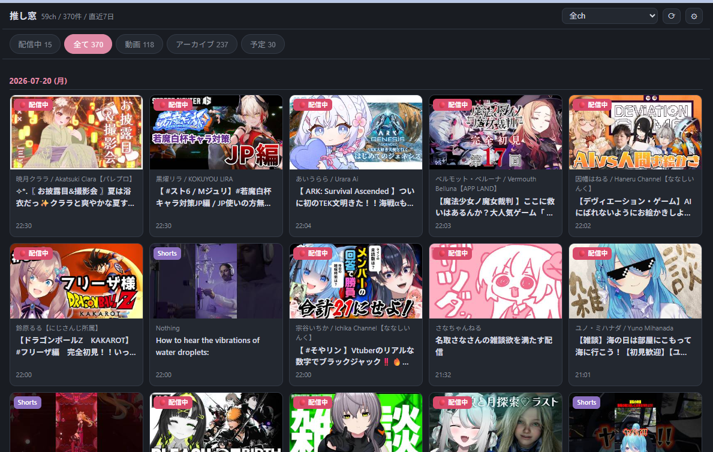
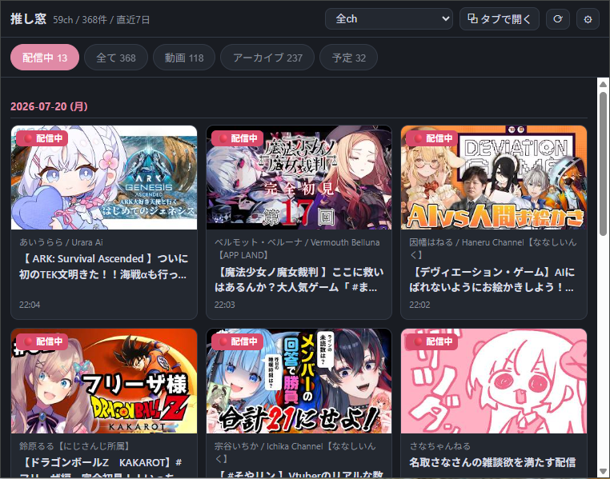
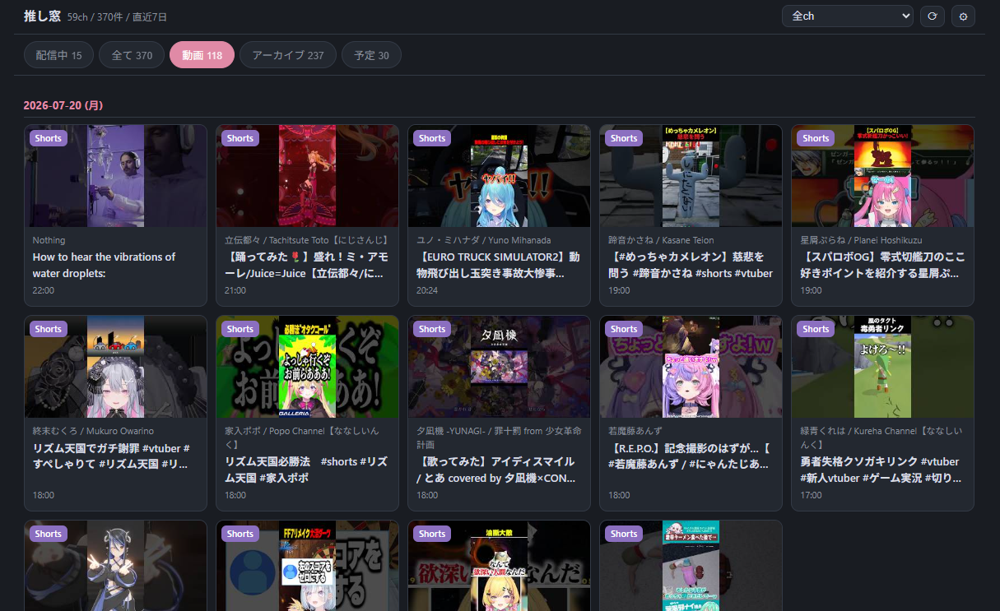
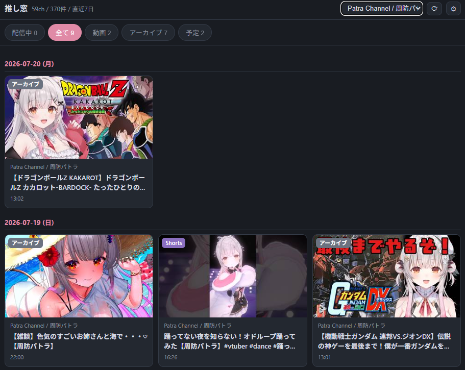
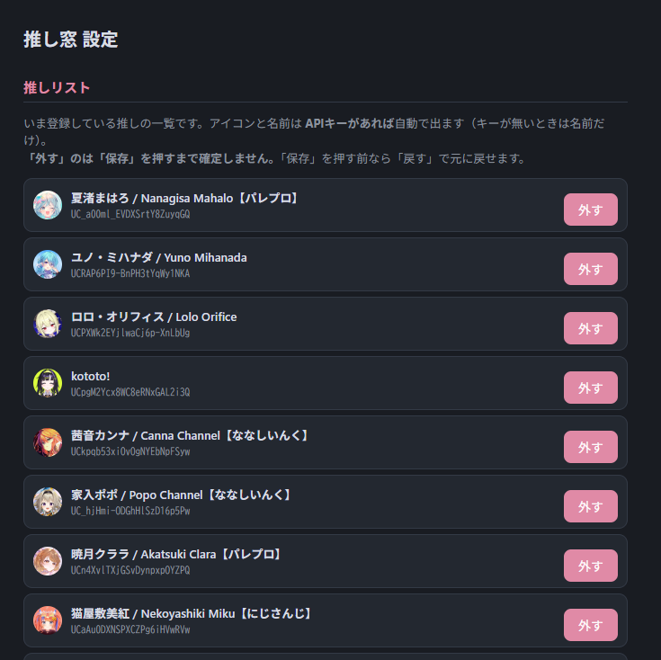

推しのYouTube新着を、1画面に集約する
登録チャンネルの動画・ライブ配信・配信予定を横断表示するChrome拡張。
種類別タブとチャンネル絞り込みで新着コンテンツが一目でわかります。

登録したチャンネルの数が増えるにつれて
「登録チャンネル」画面に様々なジャンルのコンテンツが並ぶようになってきたため、
推しの配信や動画をスムーズに閲覧するための拡張機能を開発しました。
これだけです。 配信中 / 動画 / アーカイブ / 予定をタブで切り替えでき、チャンネルでの絞り込みもワンクリック。 「いま何が来ているか」を、YouTubeを巡回せずに把握できます。
推しリストへ登録した全チャンネルの投稿を直近7日間ぶん日付ごとにまとめて表示可能。
配信中 / 全て / 動画 / アーカイブ / 予定 のタブで、見たいコンテンツの種類を絞り込めます。
リストから特定のチャンネルを選ぶと、そのチャンネルの投稿だけを表示できます。
配信・アーカイブは「配信開始時刻」、動画・Shortsは「公開時刻」を基準に並べています。
APIキー登録を行うことでアイコンや正確な配信ステータスが補完されます。キー未登録でも公開RSSで動作します。
推し窓を通常のタブとして開いて広い画面で新着コンテンツを確認できます。

配信中タブ
標準で選択されている「いまライブ配信しているチャンネル」だけを抽出して表示。

動画タブ
Shorts動画を含むアップロードされた動画を公開時刻順に一覧表示。

チャンネル絞り込み
特定の推しを選んで、そのチャンネルの投稿だけを表示。

設定画面
APIキーの登録と、リストへの登録を行えます。
リストに加えたいYouTubeチャンネルのページ上で右クリックし、コンテキストメニューから直接推しリストへ追加できる機能を予定しています。